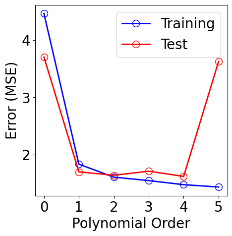
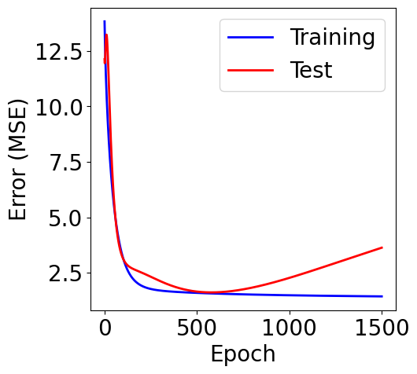
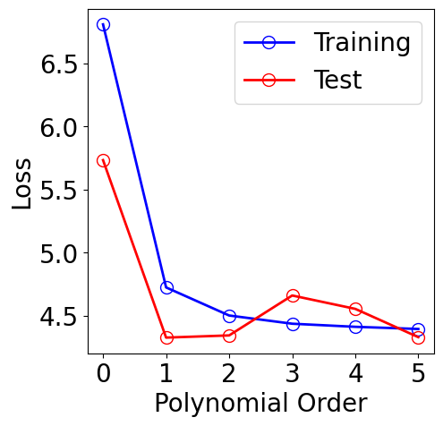
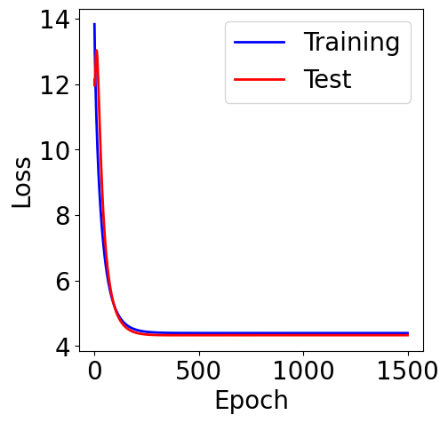
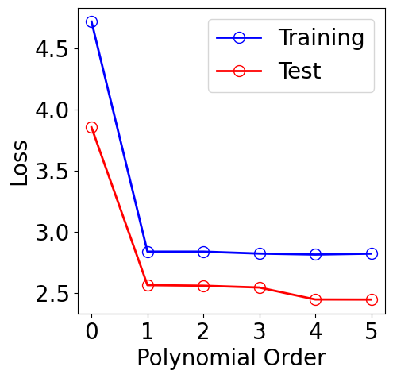

[ ]:
!pip install wget
Avoid Overfitting using Regularization¶
[2]:
import copy
import random
import numpy as np
import pandas as pd
import matplotlib.pyplot as plt
import matplotlib as mpl
import seaborn as sns
mpl.rcParams["font.size"] = 20
mpl.rcParams["lines.linewidth"] = 2
from sklearn.preprocessing import PolynomialFeatures
from sklearn.linear_model import LinearRegression
from sklearn.decomposition import PCA
from sklearn.manifold import TSNE
from sklearn.preprocessing import StandardScaler
from sklearn.model_selection import train_test_split
from sklearn.model_selection import KFold
def seed_all(seed):
random.seed(seed)
np.random.seed(seed)
# for the purpose of reproduce
SEED = 0
seed_all(SEED)
Load Dataset¶
[ ]:
!python -m wget https://raw.githubusercontent.com/deepchem/deepchem/master/datasets/delaney-processed.csv \
--output delaney-processed.csv
[4]:
DELANEY_FILE = "delaney-processed.csv"
TASK_COL = 'measured log solubility in mols per litre'
df = pd.read_csv(DELANEY_FILE)
print(f"Number of molecules in the dataset: {df.shape[0]}")
Number of molecules in the dataset: 1128
[5]:
df
[5]:
| Compound ID | ESOL predicted log solubility in mols per litre | Minimum Degree | Molecular Weight | Number of H-Bond Donors | Number of Rings | Number of Rotatable Bonds | Polar Surface Area | measured log solubility in mols per litre | smiles | |
|---|---|---|---|---|---|---|---|---|---|---|
| 0 | Amigdalin | -0.974 | 1 | 457.432 | 7 | 3 | 7 | 202.32 | -0.770 | OCC3OC(OCC2OC(OC(C#N)c1ccccc1)C(O)C(O)C2O)C(O)... |
| 1 | Fenfuram | -2.885 | 1 | 201.225 | 1 | 2 | 2 | 42.24 | -3.300 | Cc1occc1C(=O)Nc2ccccc2 |
| 2 | citral | -2.579 | 1 | 152.237 | 0 | 0 | 4 | 17.07 | -2.060 | CC(C)=CCCC(C)=CC(=O) |
| 3 | Picene | -6.618 | 2 | 278.354 | 0 | 5 | 0 | 0.00 | -7.870 | c1ccc2c(c1)ccc3c2ccc4c5ccccc5ccc43 |
| 4 | Thiophene | -2.232 | 2 | 84.143 | 0 | 1 | 0 | 0.00 | -1.330 | c1ccsc1 |
| ... | ... | ... | ... | ... | ... | ... | ... | ... | ... | ... |
| 1123 | halothane | -2.608 | 1 | 197.381 | 0 | 0 | 0 | 0.00 | -1.710 | FC(F)(F)C(Cl)Br |
| 1124 | Oxamyl | -0.908 | 1 | 219.266 | 1 | 0 | 1 | 71.00 | 0.106 | CNC(=O)ON=C(SC)C(=O)N(C)C |
| 1125 | Thiometon | -3.323 | 1 | 246.359 | 0 | 0 | 7 | 18.46 | -3.091 | CCSCCSP(=S)(OC)OC |
| 1126 | 2-Methylbutane | -2.245 | 1 | 72.151 | 0 | 0 | 1 | 0.00 | -3.180 | CCC(C)C |
| 1127 | Stirofos | -4.320 | 1 | 365.964 | 0 | 1 | 5 | 44.76 | -4.522 | COP(=O)(OC)OC(=CCl)c1cc(Cl)c(Cl)cc1Cl |
1128 rows × 10 columns
Polynomial Fitting¶
[6]:
X = df[["Molecular Weight", "Number of H-Bond Donors", "Number of Rings", "Number of Rotatable Bonds"]].values
y = df[TASK_COL].values.reshape(-1, 1)
[7]:
test_size = int(len(X)*0.1)
X_train, X_test, y_train, y_test = train_test_split(X, y, test_size=test_size, shuffle=True)
[8]:
def run_gd(X_train, y_train, X_test, y_test, lr, M,
n_epochs=20, normalize=True, norm=None,
lamda=1, init="zero", return_mse=True):
assert init in ["zero", "random"]
theta_list = []
loss_list = []
loss_test_list = []
if return_mse:
mse_list = []
mse_test_list = []
poly_features = PolynomialFeatures(degree=M)
X_train_poly = poly_features.fit_transform(X_train)
X_test_poly = poly_features.fit_transform(X_test)
if normalize:
scaler = StandardScaler()
X_train_poly = scaler.fit_transform(X_train_poly)
X_test_poly = scaler.transform(X_test_poly)
else:
scaler = None
X_train_poly = np.hstack([np.ones((X_train_poly.shape[0], 1)), X_train_poly])
X_test_poly = np.hstack([np.ones((X_test_poly.shape[0], 1)), X_test_poly])
if init == "zero":
theta = np.zeros(X_train_poly.shape[1]).reshape(-1, 1)
else:
theta = np.random.randn(X_train_poly.shape[1]).reshape(-1, 1)
# gd fit
for _ in range(n_epochs):
theta_list.append(copy.deepcopy(theta))
y_pred = X_train_poly @ theta
loss = np.mean((y_pred - y_train).reshape(-1)**2)
if return_mse:
mse_list.append(loss)
if norm is None:
loss = loss
elif norm == "l1":
loss += lamda*np.sum(np.abs(theta))
elif norm == "l2":
loss += lamda*np.sum(theta**2)
else:
NotImplementedError(f"Norm {norm} is not valid normalization method")
loss_list.append(loss)
grad = 2*X_train_poly.T @ (X_train_poly @ theta - y_train) / y_train.shape[0]
if norm is None:
grad = grad
elif norm == "l1":
grad += lamda*np.sign(theta)
elif norm == "l2":
grad += lamda*2*theta
else:
raise NotImplementedError(f"Norm {norm} is not valid normalization method")
theta = theta - lr * grad
# predict and calculate rmse of test dataset
y_test_pred = X_test_poly @ theta
loss_test = np.mean((y_test_pred-y_test).reshape(-1)**2)
if return_mse:
mse_test_list.append(loss_test)
if norm is None:
loss_test = loss_test
elif norm == "l1":
loss_test += lamda*np.sum(np.abs(theta))
elif norm == "l2":
loss_test += lamda*np.sum(theta**2)
else:
NotImplementedError(f"Norm {norm} is not valid normalization method")
loss_test_list.append(loss_test)
if return_mse:
return theta_list, mse_list, mse_test_list, scaler
else:
return theta_list, loss_list, loss_test_list, scaler
Without Regularization¶
[9]:
lr = 5e-3
n_epochs = 1500
normalize = True
norm = None # regularization in GD
orders = [0, 1, 2, 3, 4, 5]
results = {}
for idx, M in enumerate(orders):
theta_list, loss_list, loss_test_list, scaler = run_gd(X_train, y_train, X_test, y_test, lr, M, n_epochs, normalize)
results[M] = (theta_list, loss_list, loss_test_list, scaler)
[10]:
plt.figure(figsize=(5, 5))
plt.plot(orders, [results[M][1][-1] for M in orders], "-", color="b",
marker="o", markersize=10, markerfacecolor="none", markeredgecolor="b", label="Training")
plt.plot(orders, [results[M][2][-1] for M in orders], "-", color="r",
marker="o", markersize=10, markerfacecolor="none", markeredgecolor="r", label="Test")
plt.xlabel("Polynomial Order")
plt.ylabel("Error (MSE)")
plt.xticks(orders)
plt.legend()
[10]:
<matplotlib.legend.Legend at 0x7ac9f2eac0d0>

[11]:
M = orders[-1]
theta_list, loss_list, loss_test_list, scaler = results[M]
f, ax = plt.subplots(1, 1, figsize=(5,5))
ax.plot(loss_list, c="blue", label="Training")
ax.plot(loss_test_list, c="red", label="Test")
plt.xlabel("Epoch")
plt.ylabel("Error (MSE)")
plt.legend()
[11]:
<matplotlib.legend.Legend at 0x7ac9f06a5090>

L2 Norm¶
[12]:
normalize = True
norm = "l2" # regularization in GD
lamda = 1
results = {}
for idx, M in enumerate(orders):
theta_list, loss_list, loss_test_list, scaler = run_gd(X_train, y_train, X_test, y_test,
lr, M, n_epochs, normalize, norm=norm, lamda=lamda)
results[M] = (theta_list, loss_list, loss_test_list, scaler)
[13]:
plt.figure(figsize=(5, 5))
plt.plot(orders, [results[M][1][-1] for M in orders], "-", color="b",
marker="o", markersize=10, markerfacecolor="none", markeredgecolor="b", label="Training")
plt.plot(orders, [results[M][2][-1] for M in orders], "-", color="r",
marker="o", markersize=10, markerfacecolor="none", markeredgecolor="r", label="Test")
plt.xlabel("Polynomial Order")
plt.ylabel("Loss")
plt.xticks(orders)
plt.legend()
[13]:
<matplotlib.legend.Legend at 0x7ac9f0692210>

[14]:
M = orders[-1]
theta_list, loss_list, loss_test_list, scaler = results[M]
f, ax = plt.subplots(1, 1, figsize=(5,5))
ax.plot(loss_list, c="blue", label="Training")
ax.plot(loss_test_list, c="red", label="Test")
plt.xlabel("Epoch")
plt.ylabel("Loss")
plt.legend()
[14]:
<matplotlib.legend.Legend at 0x7aca2a3b3710>

L1 Norm¶
[15]:
normalize = True
norm = "l1" # regularization in GD
lamda = 1
results = {}
for idx, M in enumerate(orders):
theta_list, loss_list, loss_test_list, scaler = run_gd(X_train, y_train, X_test, y_test,
lr, M, n_epochs, normalize, norm=norm, lamda=lamda)
results[M] = (theta_list, loss_list, loss_test_list, scaler)
[16]:
plt.figure(figsize=(5, 5))
plt.plot(orders, [results[M][1][-1] for M in orders], "-", color="b",
marker="o", markersize=10, markerfacecolor="none", markeredgecolor="b", label="Training")
plt.plot(orders, [results[M][2][-1] for M in orders], "-", color="r",
marker="o", markersize=10, markerfacecolor="none", markeredgecolor="r", label="Test")
plt.xlabel("Polynomial Order")
plt.ylabel("Loss")
plt.xticks(orders)
plt.legend()
[16]:
<matplotlib.legend.Legend at 0x7ac9f06a5850>

[17]:
M = orders[-1]
theta_list, loss_list, loss_test_list, scaler = results[M]
f, ax = plt.subplots(1, 1, figsize=(5,5))
ax.plot(loss_list, c="blue", label="Training")
ax.plot(loss_test_list, c="red", label="Test")
plt.xlabel("Epoch")
plt.ylabel("Loss")
plt.legend()
[17]:
<matplotlib.legend.Legend at 0x7ac9f0485b50>

[17]: